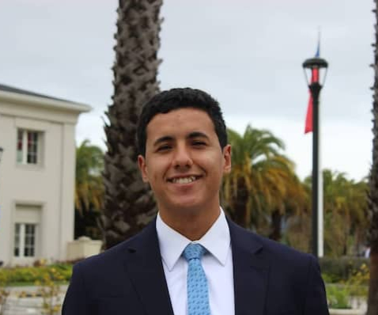

Fernando Añaña
Something about me
 I'm a 22 years old man frmo Uruguay. I'm also member of The Church of Jesus Christ of Latter-Day Saints. I served a mission for the Churh where I learn to work in a team, I also learn hablities in an office environment because I was also asigned to be the secretary to the mission president. I always was a good student and fast learner. I have a big capacity of adaptation to situations and environments that are complex or difficults for others. During my time in Chile as a missionary I had to moved from one city to another, some in rural parts of Chili and other in a metropolitan area, where I learned to talk to both, people from the cities and from the little towns. In overall, lived many experiences that made me hard and team working man.
Experience
I'm currently studying Software Development in the BYU-Pathway, here I'm learning how to program in differents programming languages, and also web frontend and backend development, among other things